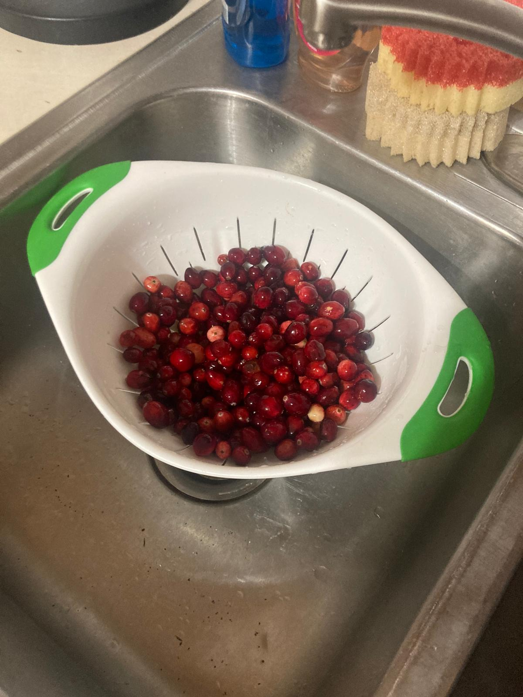
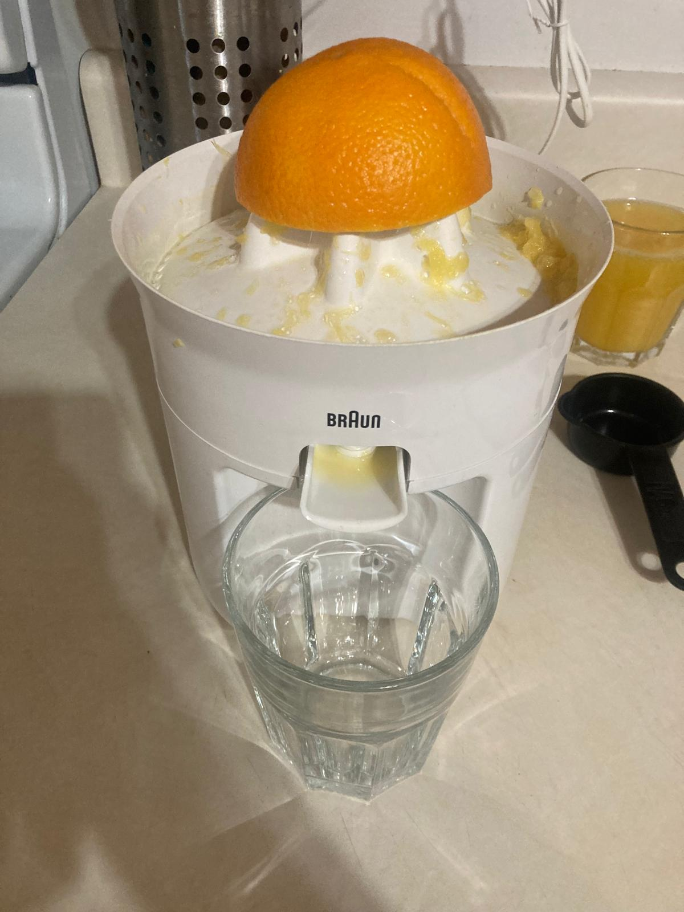
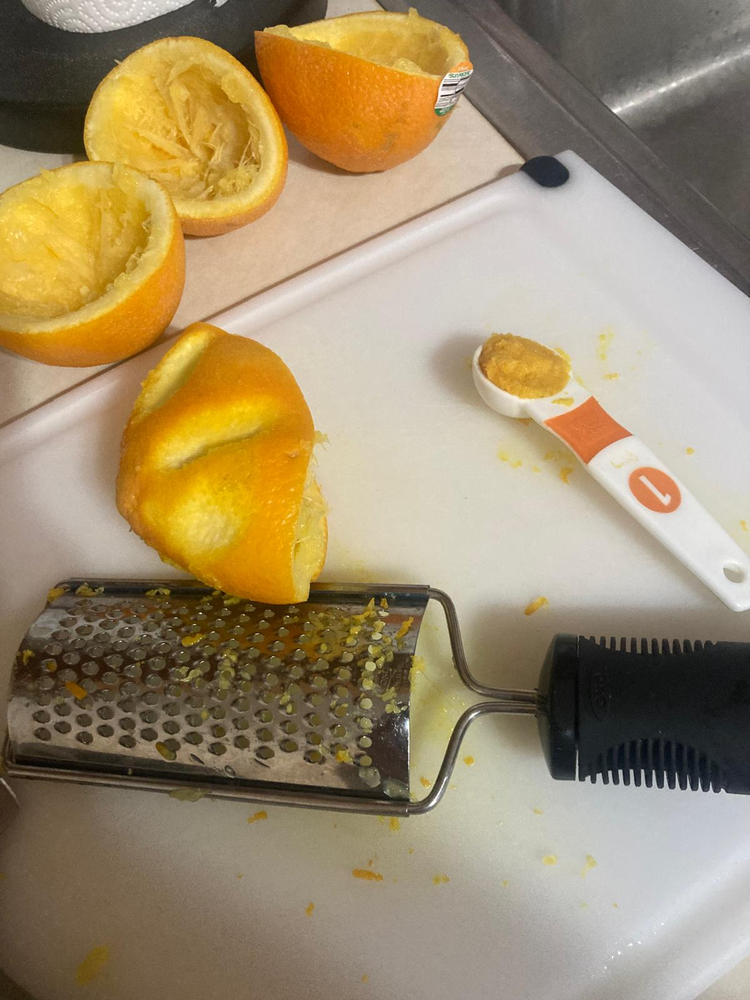
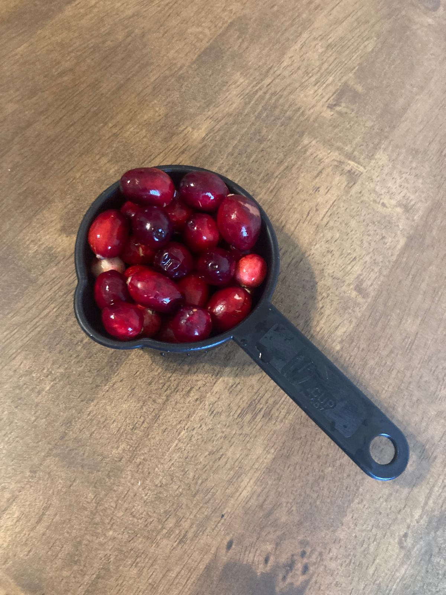
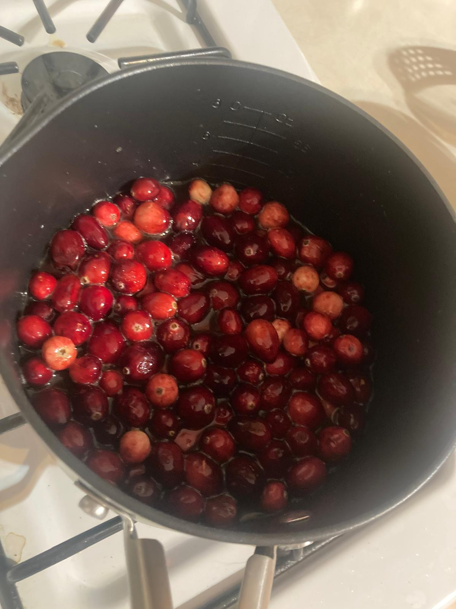
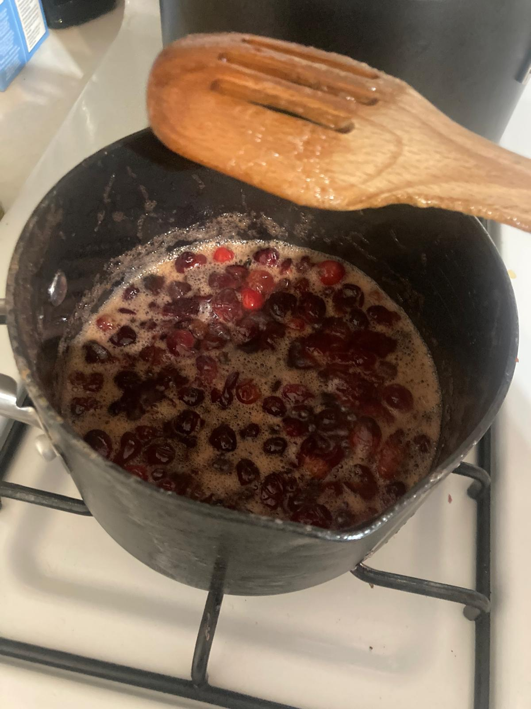
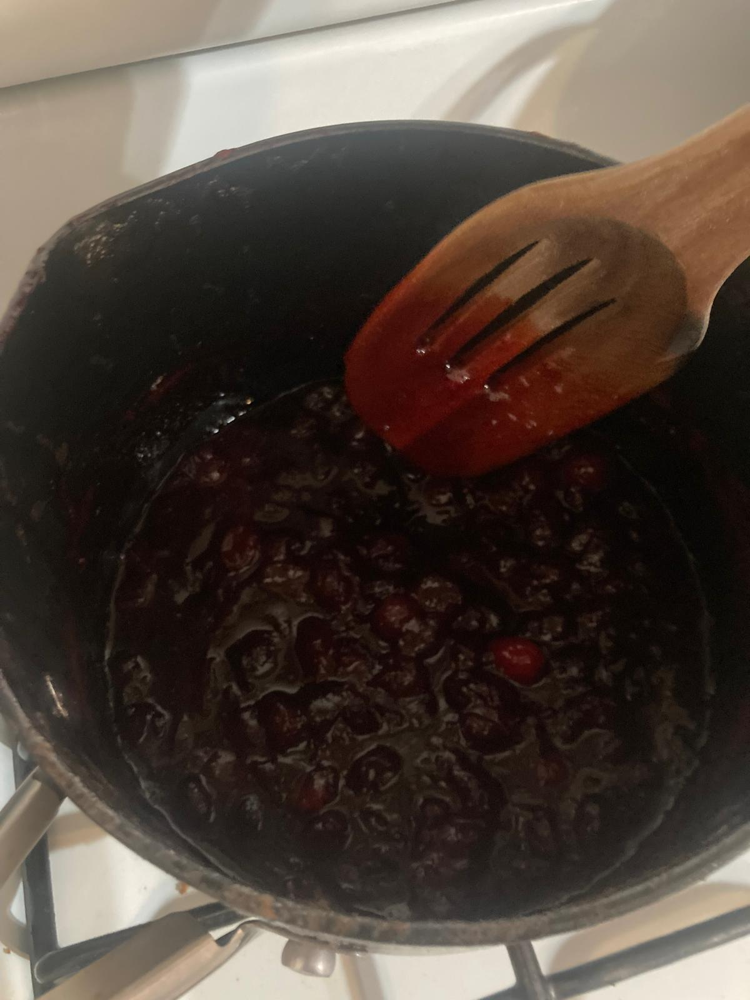
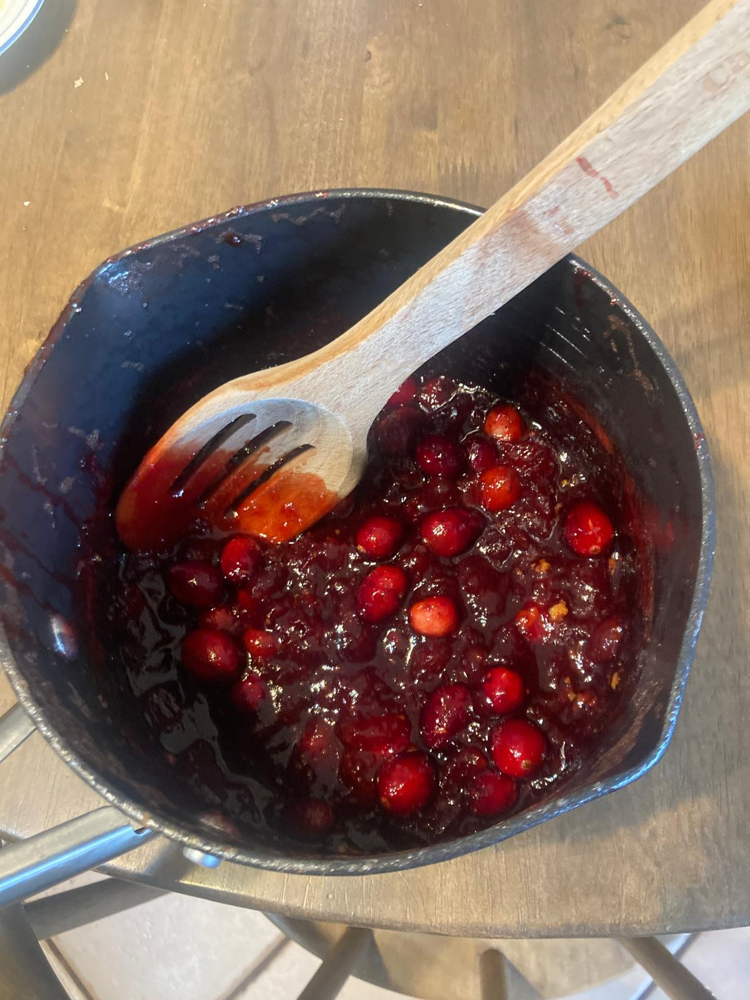
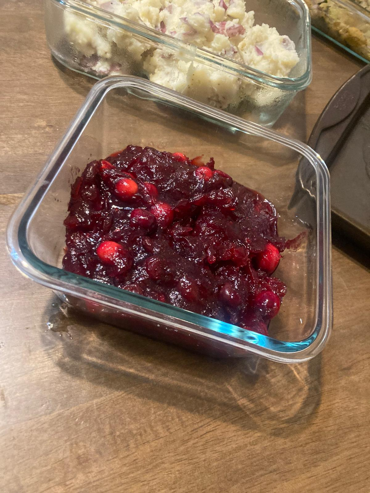

- Rinse the cranberries.
- Juice the oranges.
- Grate the orange to get the zest.
- Set 1/2 of the cranberries aside. We will add them to the end to add texture and color.
- Throw the rest of the cranberries, the brown sugar, the water, and the orange juice in a saucepan on medium heat. Stir occasionally and wait for it to come to a simmer. Once it simmers, reduce to low-medium heat and continue to cook until the liquid reduces and the cranberries have burst. Stir occasionally. It should take about 15min.
- Remove from heat and add in the orange zest, the vanilla extract, and the rest of the cranberries. Stir.
- Serve warm or at room temperature.








